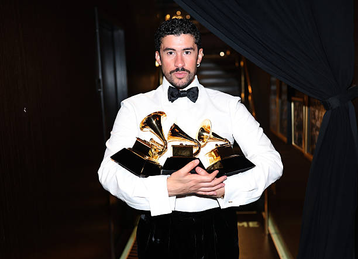

About Bad Bunny

Image source: Getty Images
Bad Bunny, whose real name is Benito Martinez Ocasio, is a Puerto Rican singer, rapper, and songwriter. He was born on March 10, 1994, in Vega Baja, Puerto Rico. He is known for his influence on Latin trap and reggaeton and for bringing Spanish-language music to a worldwide audience.
Bad Bunny began gaining attention by releasing music online before becoming widely known through collaborations with other Latin artists. Throughout his career, he has experimented with different musical styles while continuing to incorporate his Puerto Rican culture and Spanish language into his music.
His music has reached audiences around the world, and he has released several successful albums. His career has also expanded beyond music into areas such as fashion, acting, and professional wrestling appearances.